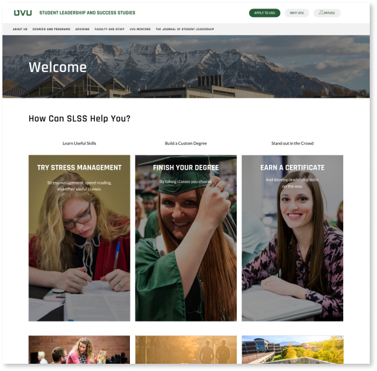

UX Research and Redesign for UVU’s
Student Leadership & Succes Center
Mike Dahle
The Problem
Utah Valley University has a very clean and user friendly design that you would expect from the largest college in Utah. When you first load up the University’s homepage you will probably be impressed by how well put together it is. The problem though, is that individual departments are left to fend for themselves. This causes many problems related to usability, ease of access, and user satisfaction when navigating department webpages. The Student Leadership & Success Studies Department is currently having this problem. They want to drive students to enroll in their courses & programs, but you wouldn’t know that from looking at their homepage.
The Process
I was placed onto a team of six students where our team competed against other student teams to redesign the SLSS department’s website. Our first step into this project was to hold interviews with our stakeholders (leaders within SLSS) to understand their main objectives and goals are for the website, As well as the current problems they are facing. After gaining a better understanding of their point of view we then surveyed and interviewed their target audience (UVU students) to see the problems and potential issues that our users would have navigating the site. We also performed eye-tracking tests to get more hard data on the site. With both the needs of our shareholders and their target audience we moved to wire-framing and creating surface compositions. With surface compositions we were able to conduct usability testing to make sure that our redesign was actually solving the issues we faced. Then with the final product in hand we presented and delivered our redesign to the shareholder.
Conclusion
This project was very valuable for me to learn how to work on a team with people who have varied skillsets and experience. Not only did I get to experience the process of working with a client and doing the research necessary to develop their new website, but I also gained the experience of doing that on a team. Some of my peers were studying design while others like me were focused on development. Even though there were some things that we couldn’t develop because of constraints regarding the institution. It was still valuable to see what it would be like to work with other developers and designers to make a product that meets the needs of our users. The new homepage is an improvement over what they had at the start. But even with the design being finished there are still things we could work on to improve our redesign. This is something where we could repeat the design cycle to refine our product if we had the chance. However in the end our shareholders were very happy with all of our new page designs.
